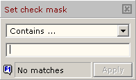
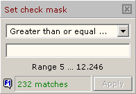

ToDo GridColumn filter, set check mask |
  
|
ToDo GridColumn filter, set check mask |
|
this page .. |
see also .. |
|---|---|
Column filter |
|
|
Column filter, set check mask |
|
|
|
|
ToDo Grid Expert is not yet available in GExperts |
Overview |
|
In this window you define masks for automatically selecting list elements of the parent filter window. The selection of the mask type to be applied in the combo box is fixed, but adapts to different list contents. The mask window cannot be moved.
 Mask for lists with text |
 Mask for lists with exclusively numeric values |
After selecting the mask type to be used, the mask text can be defined in the input field below. The maximum length is 24 characters. The number of matches in the list to be filtered is displayed in the status bar as you type..